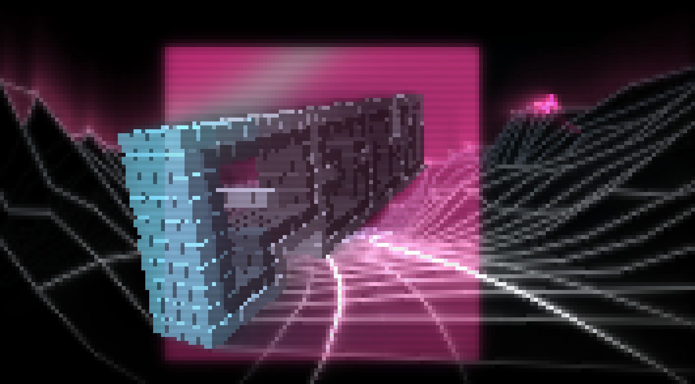

PIXEL LOVE

what this is
A real-time demo that runs entirely in a text terminal. No OpenGL, no framework, no game engine, no video player: 177 × 49 characters become 177 × 98 pixels, sixty times a second, for exactly five minutes. It competed at Assembly 2026 in Helsinki — one of the oldest and biggest demoparties in the world — in the AI Coding compo, and placed 4th.
The split is the point. All of the demo's code was written by Claude Code — every scene, every effect, the director and timeline, the fonts, the texts — in 782 prompts, co-directed rather than autocompleted. It runs on movy, the terminal graphics engine I wrote by hand, with no AI at all. The machine wrote the demo, on an engine a human built for it. That felt like the right way around.
download
Fullscreen terminal (F11), then chmod +x pxlv-linux && ./pxlv-linux. Needs at least
177 × 49 characters — the demo checks, and tells you. It was built for 16:9 at that
size, so increase the font until 49 lines fill the screen. Keyboard only; ESC quits. It runs
exactly 5:00 and exits by itself. One self-contained binary with the soundtrack embedded — no install,
no assets folder, no dependencies. Copy it and run it.
readme.txt · FILE_ID.DIZ
· macOS may quarantine the download: xattr -d com.apple.quarantine pxlv-apple-silicon
how it was made
by the machine
Claude Code (Anthropic — Opus 4.8, Opus 5, Fable 5) wrote 100% of the demo's code: every scene, every effect, the director and timeline, the fonts, the texts. 39,713 lines of Zig in 782 prompts across 82 sessions. Not autocompleted: co-directed — I said what I wanted and judged what came back; Claude designed and wrote it.
The soundtrack "Pixel Surge" came from Suno 4.5, from one prompt: "Chiptune EDM with Game Boy and Commodore 64 colors…". Suno returned 5:40 at 140 BPM; I cut 40 seconds by hand in Reason — to exactly 5:00, which is exactly 700 beats.
by hand
movy, the terminal graphics engine this runs on — 15,673 lines of Zig, 210 commits, no AI. The direction, the pixel art, the arrangement, and every decision about what stayed in.
The renderer is movy's: a float framebuffer with a second, persistent glow buffer that blurs and decays every frame — which is where the bloom and the neon trails come from, for free. Pixels are half-block characters, so one cell is two pixels and the aspect comes out square. Output is a hand-rolled dirty-row ANSI writer that only repaints what changed — that is what makes 60 fps in a terminal possible at all.
Everything is a pure function of the beat: the demo plays identically every time it is executed. 55,386 lines of Zig, engine included. All of it in this room.
file_id.diz
████████████████████████████████████████████████████ ████████████████████ ██ ██ ██ ██ ██ ██ ██ ██ ██ ██ ██ ██ ██ ██ ██ ██ ██ ██ ██ ██ ██ ██ ██ ██████ ██████ ████████ ██ ██ ██ ██ ██ ██ ██ ██ ██ ██ ██ ██ ██ ████████████ ██ ██ ██ ██ ██ ██ ██ ██ ██ ████████████ ████████████████████████████████████████████████████████ P X L V ( P I X E L - L O V E ) a terminal demo, 5:00 ASSEMBLY 2026 · AI Coding (Vibe Demo) by m64 · all code by Claude Code ------------------------------------- 177x49 chars = 177x98 px @ 60 fps, in a text terminal. ANSI only: no GL, no framework, no video player. Runs on movy, my hand-written Zig engine - a persistent glow buffer makes the neon real. PROMPTED INTO EXISTENCE: 100% of the demo code written by Claude Code, in 782 prompts. Music "Pixel Surge" by Suno - from one prompt. An AI's love letter to the demoscene. <3 keep glowing
credits
code → Claude Code (Anthropic) · music → Suno 4.5 · engine, direction, pixel art, arrangement → m64
PXLV logo 1 visually inspired by Dragon ^ Death Sector / Heineken, 1990. movy on GitHub →